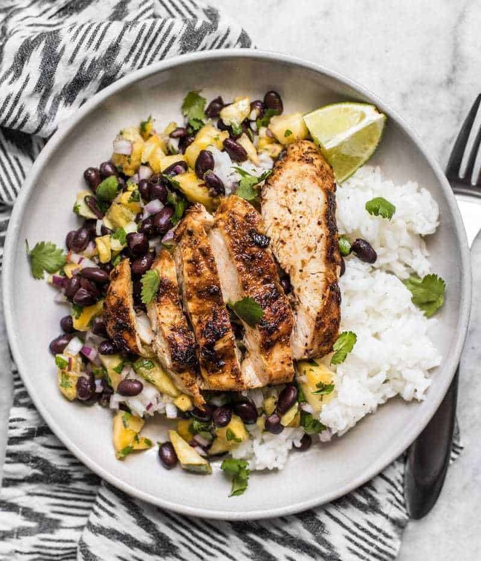

Jerk Chicken with Pineapple Black Bean Salsa

Description
This Jerk Chicken with Pineapple Black Bean Salsa is incredibly simple, but still big on summery flavor.
The spicy jerk seasoning perfectly compliments the sweet pineapple salsa,
and the black beans add bulk and extra protein to the meal without adding a lot to the cost.
And even better yet, you can serve this meal hot, or eat the leftovers cold for a nice refreshing summer lunch.
Ingredients (for 4 Servings)
- 4 cups cooked rice
- 2 cups pineapple tidbits
- 1 15oz. can black beans, well rinsed
- 1/3 cup finely diced red onion
- 1/2 cup coarsely chopped cilantro
- 1 lime
- 1 pinch crushed red pepper
- 1/4 tsp salt, or to taste
- 2 boneless, skinless chicken breasts
- 1 Tbsp jerk seasoning
- 1 Tbsp cooking oil
Steps
-
Begin cooking your rice first. If you plan on packing this for meal prep,
transfer the cooked rice to your meal prep containers and refrigerate them as you finish the rest of the recipe,
so they can begin to cool down.
-
While the rice is cooking, prepare the pineapple black bean salsa.
Coarsely chop the pineapple tidbits into smaller pieces, similar in size to the black beans.
Place the chopped pineapple, rinsed black beans, diced red onion, and chopped cilantro in a large bowl.
-
Squeeze the juice of half the lime (about 1 Tbsp) over the ingredients in the bowl.
Also add 1/4 tsp salt and a pinch of red pepper flakes (optional).
Stir the ingredients together, give it a taste, and add more salt or lime juice if needed.
Any unused lime will be cut into wedges for squeezing over the chicken before serving.
-
Next, prepare the jerk chicken. Pat the chicken breasts dry with a paper towel.
Place a piece of plastic wrap over the chicken to eliminate splatter,
then gently pound the chicken breasts into an even thickness using either a rolling pin or a mallet.
Sprinkle the jerk seasoning over both sides of the chicken and use your hands to rub it into the surface,
making sure they're completely coated.
-
Add the cooking oil to a large skillet, or preheat your grill.
Once hot, add the chicken and cook until well browned on both sides,
and the chicken is completely cooked through (about 7 minutes each side).
It should no longer be pink in the center and the juices should run clear.
For extra safety, use an instant read meat thermometer and cook until the internal temperature reaches 165ºF.
-
Transfer the cooked chicken to a clean cutting board and let it rest for five minutes.
After five minutes, slice the chicken into 1/2-wide strips.
-
To serve, place about a cup of cooked rice on a plate, or in your meal prep container,
top with about a cup of the pineapple black bean salsa, and a few strips of the jerk chicken.
Slice the remaining lime into wedges and squeeze fresh juice over the chicken just before eating.